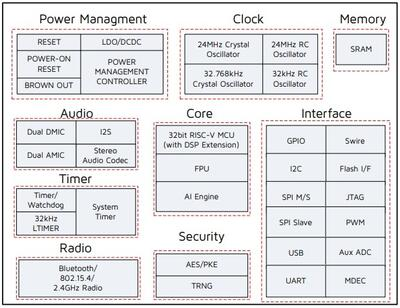

TLSR9518ADK80D
Overview
The TLSR9518A Generic Starter Kit is a hardware platform which can be used to verify the Telink TLSR951x series chipset [1] and develop applications for several 2.4 GHz air interface standards including Bluetooth 5.2 (Basic data rate, Enhanced data rate, LE, Indoor positioning and BLE Mesh), Zigbee 3.0, Homekit, 6LoWPAN, Thread and 2.4 Ghz proprietary.
More information about the board can be found at the Telink B91 Generic Starter Kit Hardware Guide [2] website.
Hardware
The TLSR9518A SoC integrates a powerful 32-bit RISC-V MCU, DSP, AI Engine, 2.4 GHz ISM Radio, 256 KB SRAM (128 KB of Data Local Memory and 128 KB of Instruction Local Memory), external Flash memory, stereo audio codec, 14 bit AUX ADC, analog and digital Microphone input, PWM, flexible IO interfaces, and other peripheral blocks required for advanced IoT, hearable, and wearable devices.

The TLSR9518ADK80D default board configuration provides the following hardware components:
RF conducted antenna
1 MB External Flash memory with reset button
Chip reset button
Mini USB interface
4-wire JTAG
4 LEDs, Key matrix up to 4 keys
2 line-in function (Dual Analog microphone supported when switching jumper from microphone path)
Dual Digital microphone
Stereo line-out
Supported Features
The tlsr9518adk80d board supports the hardware features listed below.
- on-chip / on-board
- Feature integrated in the SoC / present on the board.
- 2 / 2
-
Number of instances that are enabled / disabled.
Click on the label to see the first instance of this feature in the board/SoC DTS files. -
vnd,foo -
Compatible string for the Devicetree binding matching the feature.
Click on the link to view the binding documentation.
tlsr9518adk80d/tlsr9518 target
Type |
Location |
Description |
Compatible |
|---|---|---|---|
CPU |
on-chip |
Telink RISC-V CPU1 |
|
ADC |
on-chip |
Telink B91 ADC node1 |
|
Flash controller |
on-chip |
Telink B91 Flash Controller1 |
|
GPIO & Headers |
on-chip |
||
I2C |
on-chip |
Telink B91 I2C1 |
|
IEEE 802.15.4 |
on-chip |
Telink B91 IEEE802154 node1 |
|
Input |
on-board |
Group of GPIO-bound input keys1 |
|
Interrupt controller |
on-chip |
RISC-V CPU interrupt controller1 |
|
on-chip |
SiFive RISCV-V platform-local interrupt controller1 |
||
LED |
on-board |
Group of GPIO-controlled LEDs1 |
|
on-board |
Group of PWM-controlled LEDs1 |
||
MTD |
on-chip |
Flash node1 |
|
on-board |
Fixed partitions of a flash (or other non-volatile storage) memory1 |
||
Pin control |
on-chip |
The Telink B91 pin controller is a singleton node responsible for controlling pin function selection and pin properties1 |
|
Power management |
on-chip |
Telink B91 power control node1 |
|
PWM |
on-chip |
Telink B91 PWM1 |
|
RNG |
on-chip |
Telink B91 RNG1 |
|
Serial controller |
on-chip |
||
SPI |
on-chip |
Telink B91 SPI2 |
|
SRAM |
on-chip |
Generic on-chip SRAM2 |
|
Timer |
on-chip |
RISC-V Machine Timer1 |
Note
To support “button” example project PC3-KEY3 (J20-19, J20-20) jumper needs to be removed and KEY3 (J20-19) should be connected to VDD3_DCDC (J51-13) externally.
For the rest example projects use the default jumpers configuration.
Limitations
Maximum 3 GPIO pins could be configured to generate interrupts simultaneously. All pins must be related to different ports and use different IRQ numbers.
DMA mode is not supported by I2C, SPI and Serial Port.
UART hardware flow control is not implemented.
SPI Slave mode is not implemented.
I2C Slave mode is not implemented.
Default configuration and IOs
System Clock
The TLSR9518ADK80D board is configured to use the 24 MHz external crystal oscillator with the on-chip PLL/DIV generating the 48 MHz system clock. The following values also could be assigned to the system clock in the board DTS file boards/telink/tlsr9518adk80d/tlsr9518adk80d.dts:
16000000
24000000
32000000
48000000
64000000
96000000
&cpu0 {
clock-frequency = <48000000>;
};
PINs Configuration
The TLSR9518A SoC has five GPIO controllers (PORT_A to PORT_E), but only two are currently enabled (PORT_B for LEDs control and PORT_C for buttons) in the board DTS file:
LED0 (blue): PB4, LED1 (green): PB5, LED2 (white): PB6, LED3 (red): PB7
Key Matrix SW0: PC2_PC3, SW1: PC2_PC1, SW2: PC0_PC3, SW3: PC0_PC1
Peripheral’s pins on the SoC are mapped to the following GPIO pins in the boards/telink/tlsr9518adk80d/tlsr9518adk80d.dts file:
UART0 TX: PB2, RX: PB3
UART1 TX: PC6, RX: PC7
PWM Channel 0: PB4
PSPI CS0: PC4, CLK: PC5, MISO: PC6, MOSI: PC7
HSPI CS0: PA1, CLK: PA2, MISO: PA3, MOSI: PA4
I2C SCL: PE1, SDA: PE3
Serial Port
The TLSR9518A SoC has 2 UARTs. The Zephyr console output is assigned to UART0. The default settings are 115200 8N1.
Programming and debugging
The tlsr9518adk80d board supports the runners and associated west commands listed below.
| flash | debug | |
|---|---|---|
| spi_burn | ✅ (default) | ✅ (default) |
Building
Important
These instructions assume you’ve set up a development environment as described in the Getting Started Guide.
To build applications using the default RISC-V toolchain from Zephyr SDK, just run the west build command. Here is an example for the “hello_world” application.
# From the root of the zephyr repository
west build -b tlsr9518adk80d samples/hello_world
To use Telink RISC-V Linux Toolchain [3], ZEPHYR_TOOLCHAIN_VARIANT and CROSS_COMPILE variables need to be set.
In addition CONFIG_FPU=y must be selected in boards/telink/tlsr9518adk80d/tlsr9518adk80d_defconfig file since this
toolchain is compatible only with the float point unit usage.
# Set Zephyr toolchain variant to cross-compile
export ZEPHYR_TOOLCHAIN_VARIANT=cross-compile
# Specify the Telink RISC-V Toolchain location
export CROSS_COMPILE=~/toolchains/nds32le-elf-mculib-v5f/bin/riscv32-elf-
# From the root of the zephyr repository
west build -b tlsr9518adk80d samples/hello_world
Telink RISC-V Linux Toolchain [3] is available on the Burning and Debugging Tools for TLSR9 Series in Linux [6] page.
Open a serial terminal with the following settings:
Speed: 115200
Data: 8 bits
Parity: None
Stop bits: 1
Flash the board, reset and observe the following messages on the selected serial port:
*** Booting Zephyr OS version 2.5.0 ***
Hello World! tlsr9518adk80d
Flashing
To flash the TLSR9518ADK80D board see the sources below:
It is also possible to use the west flash command, but additional steps are required to set it up:
Download Telink RISC-V Linux Toolchain [3]. The toolchain contains tools for the board flashing as well.
Since the ICEman tool is created for the 32-bit OS version it is necessary to install additional packages in case of the 64-bit OS version.
sudo dpkg --add-architecture i386
sudo apt-get update
sudo apt-get install -y libc6:i386 libncurses5:i386 libstdc++6:i386
Run the “ICEman.sh” script.
# From the root of the {path to the Telink RISC-V Linux Toolchain}/ice repository
sudo ./ICEman.sh
Now you should be able to run the west flash command with the toolchain path specified (TELINK_TOOLCHAIN_PATH).
west flash --telink-tools-path=$TELINK_TOOLCHAIN_PATH
You can also run the west flash command without toolchain path specification if add SPI_burn and ICEman to PATH.
export PATH=$TELINK_TOOLCHAIN_PATH/flash/bin:"$PATH"
export PATH=$TELINK_TOOLCHAIN_PATH/ice:"$PATH"
Debugging
This port supports UART debug and OpenOCD+GDB. The west debug command also supported. You may run
it in a simple way, like:
west debug
Or with additional arguments, like:
west debug --gdb-port=<port_number> --gdb-ex=<additional_ex_arguments>
Example:
west debug --gdb-port=1111 --gdb-ex="-ex monitor reset halt -ex b main -ex continue"